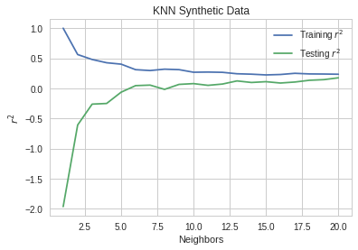
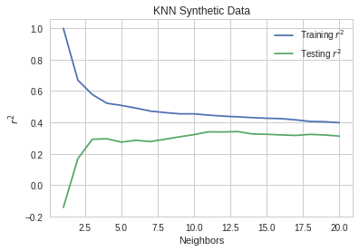
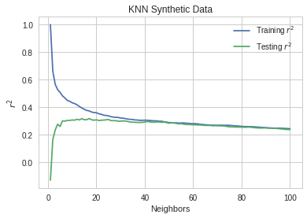
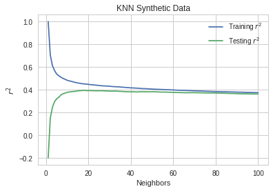

This will look at using K-Nearest Neighbors for regression. First I'll look at a synthetic data-set and then a dataset that was created to study the effect of polution on the housing prices in Boston.
The Model
def get_r_squared(max_neighbors=10, samples=100):
train_score = []
test_score = []
models = []
inputs, values = make_regression(n_samples=samples)
X_train, X_test, y_train, y_test = train_test_split(inputs, values)
for neighbors in range(1, max_neighbors+1):
model = KNeighborsRegressor(n_neighbors=neighbors, n_jobs=4)
model.fit(X_train, y_train)
train_score.append(model.score(X_train, y_train))
test_score.append(model.score(X_test, y_test))
models.append(model)
return train_score, test_score, models
def plot_r_squared(neighbors=20, samples=100):
train_score, test_score, models = get_r_squared(neighbors, samples)
neighbors = range(1, neighbors+1)
pyplot.plot(neighbors, train_score, label="Training $r^2$")
pyplot.plot(neighbors, test_score, label="Testing $r^2$")
pyplot.xlabel("Neighbors")
pyplot.ylabel("$r^2$")
pyplot.title("KNN Synthetic Data")
pyplot.legend()
return train_score, test_score, models
plot_r_squared()

I originally had it set to a maximum of 10 neighbors, which made it appear that 9 was the peak, but expanding it shows that it was 15. It had a fairly low \(r^2\) score, even at its best. There appears to be more variance in the make_regression function than I had thought. When I ran it earlier the testing score never exceeded the training score and the best k was 12. The actual best score was the same, though.
print("Max r2: {:.2f}".format(max(test_score)))
Max r2: 0.47
The default for the make_regression function is to create 100 samples (which I mimicked by passing in 100 explicitly). By statistics standards this is a reasonable dataset (I believe 20 samples was the minimum for a long time) but it is very small by machine learning samples. Will it do better if it has a larger sample size?
plot_r_squared(samples=1000)

It didn't, but maybe because I didn't increase the number of neighbors.
plot_r_squared(neighbors=100, samples=1000)

No, that didn't help, and after re-looking at the plot above I realized that it was getting worse at the end, so I shouldn't have expected that to help. So why does it do worse with more data?
train, test, models = plot_r_squared(samples=10000, neighbors=100)

Having even more data seems to have improved the amount the testing score goes down with the number of neighbors. Maybe there's an ideal neighbors to data points ratio that I'm missing, and too many neighbors means you need more data.
@jit
def find_first(array, match):
"""find the index of the first match
Expects a 1-dimensional array or list
Args:
array (numpy.array): thing to search
match: thing to match
Returns:
int: index of the first match found (or None)
"""
for index in range(len(array)):
if array[index] == match:
return index
return
best = max(test)
print("Best Test r2: {:.2f}".format(best))
test = numpy.array(test)
index = find_first(test, best)
print("Best Neighbors: {0}".format(index + 1))
Best Test r2: 0.39
Best Neighbors: 18